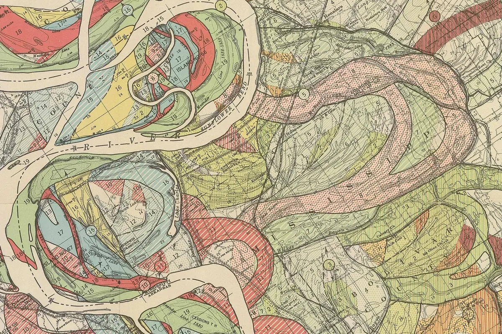
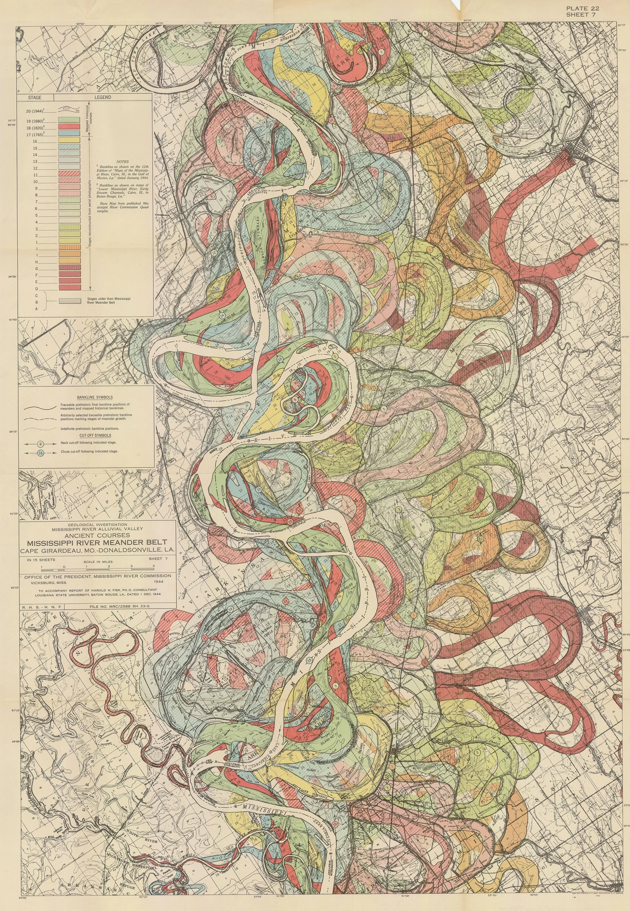

On the first of December 1944 the Mississippi River Commission at Vicksburg received a report from Harold Fisk, a geologist from Louisiana State University, on how the valley of the lower Mississippi had been made. Most of it is sections, borings and argument. At the back is a set of fifteen sheets, Plate 22, that follow the river down from Cape Girardeau in Missouri to Donaldsonville in Louisiana, and on them the river is drawn not once but twenty times. The present channel runs pale down each sheet between banks in heavy ink. Around it, overlapping like spilled ribbon, are the places it used to be: rose, straw, sage and sky blue, flat or hatched or stippled, each colour a stage, numbered from one, the oldest, to twenty, the river as it stood that year.
The last three stages Fisk could copy from surveys made in 1765, 1820 and 1880. The others he reconstructed from aerial photographs, in which an old channel shows through the fields as a curving band of darker soil and the banks of an old bend as faint concentric lines, and from borings that found the clay of vanished lakes beneath the cotton. Later geologists have redrawn his dates. The maps are still the ones people know.

A river on a flat plain cannot run straight for long. Where it bends, the water on the outside of the curve is thrown against the bank, faster and deeper, while a corkscrew current along the bed carries sand toward the inside. The outer bank is undercut and slumps in, a slab at a time, at high water; the sand is dropped where the current slackens on the inside of the bend, as a point bar. So every bend eats outward and builds inward at once, and because the hardest scour comes a little below the sharpest part of the turn, the whole loop leans and creeps down the valley. Each flood adds a low ridge along the inside bank, and the old ones stay behind it as ridge and swale, the growth rings of the bend.
A loop that grows long enough doubles back until only a neck of land divides it from its own course downstream. In some flood the water goes across the neck instead of around, and within days the river has a new channel. Sand settles in both mouths of the old loop, which is left as a crescent lake; over the centuries it fills with clay and turns to cypress swamp, then to a damp field with a curve in it. The clay is tougher than the sand around it, and when the river returns it bends around the old plug, which is why Fisk's channels buckle where they meet. Mark Twain, who had been a pilot on the river, counted its cut-offs and did the arithmetic:
In the space of one hundred and seventy-six years the Lower Mississippi has shortened itself two hundred and forty-two miles. That is an average of a trifle over one mile and a third per year. Therefore, any calm person, who is not blind or idiotic, can see that in the Old Oolitic Silurian Period, just a million years ago next November, the Lower Mississippi River was upwards of one million three hundred thousand miles long, and stuck out over the Gulf of Mexico like a fishing-rod. And by the same token any person can see that seven hundred and forty-two years from now the Lower Mississippi will be only a mile and three-quarters long, and Cairo and New Orleans will have joined their streets together, and be plodding comfortably along under a single mayor and a mutual board of aldermen. There is something fascinating about science. One gets such wholesale returns of conjecture out of such a trifling investment of fact.
The Corps of Engineers had less patience with the wandering. In 1831 Henry Shreve dug across the neck of Turnbull's Bend, above Baton Rouge, to shorten the trip for steamboats, and the river took his cut. The upper arm of the abandoned loop, Old River, became a short channel to the Atchafalaya, which offered the Mississippi a shorter and steeper way to the Gulf. In 1952 Fisk reported that the Atchafalaya was taking more of the flow every decade and would capture the river within a generation. The Corps' answer, finished in 1963, was the Old River Control Structure: gates that let the Atchafalaya have three tenths of the water and hold the rest in its bed past Baton Rouge and New Orleans. The flood of 1973 nearly tore it out of the ground. It holds, for now, and the river leans on it.
